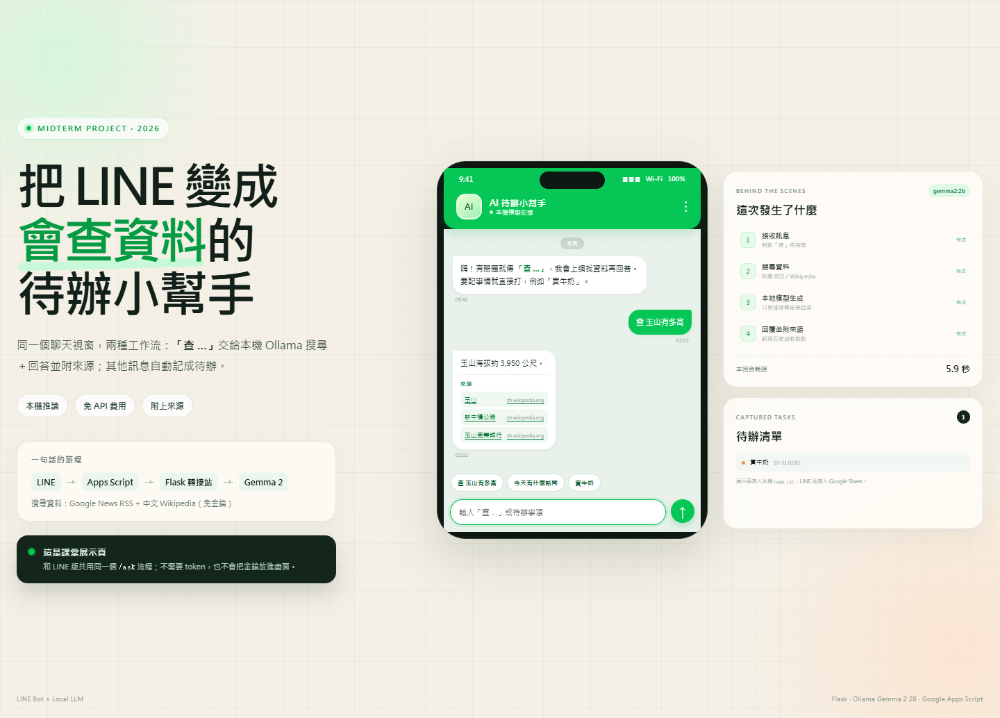

期中專題報告
姓名：＿＿＿＿＿＿ 學號：＿＿＿＿＿＿ 日期：2026 / 10 / 31
這個專案把 LINE 變成一個「可以查資料，也可以記事情」的入口。使用者在聊天室輸入「查 …」時，系統會先搜尋 Google News RSS 與中文 Wikipedia，再把搜尋結果交給跑在自己電腦上的 Ollama Gemma 2 2B 模型整理，最後回覆一段繁體中文答案與可點擊的來源。其他訊息則自動寫入 Google Sheet 待辦清單。
專案解決兩個日常問題：第一，查資料往往要離開聊天室、開瀏覽器、再回來；第二，待辦常散落在聊天記錄裡。系統採「雲端收發、本機推論」的混合架構：Google Apps Script 負責接收 LINE Webhook，Flask 轉接站負責搜尋與呼叫本機模型。這麼做不需要昂貴的 API 額度，也能把模型推論留在家用電腦。實際測試中，暖機後一次查詢約 5.5～5.9 秒，冷啟動約 16 秒；11 個單元測試全部通過。
我每天使用 LINE 的頻率比瀏覽器高。遇到「玉山有多高」、「今天有什麼新聞」這類小問題時，我通常會切到瀏覽器搜尋，看完再回到 LINE；如果是「買牛奶」、「明天交報告」這類事情，則很容易被後面的聊天洗掉。現成的 AI 聊天機器人雖然能回答問題，但多半要把資料送到雲端模型，而且不會順手幫我記待辦。
因此我想做一個在原本的聊天視窗裡完成兩件事的助手：
| 目標 | 對應設計 |
|---|---|
| 不離開 LINE 就能查資料 | Webhook 接收訊息，回答直接回到同一個聊天室 |
| 答案要能查證 | 先搜尋，再把結果放進 prompt，最後附上來源 |
| 不要有逐字 API 費用 | 使用本機 Ollama，不呼叫收費模型 API |
| 待辦不要散在聊天記錄 | 非「查」訊息自動寫入 Google Sheet |
| 沒有固定伺服器也要能運作 | 用 Google Apps Script 當雲端入口，本機用 ngrok 穿透 |
| 輸入 | 系統行為 | 輸出 |
|---|---|---|
查 玉山有多高 |
清理關鍵字 → 搜尋 Wikipedia → Gemma 2 整理 | 答案＋來源連結 |
查 今天台灣有什麼新聞 |
判斷為新聞題 → Google News RSS 優先 | 近期新聞摘要＋媒體來源 |
買牛奶 |
不進入 AI 流程，直接寫入待辦 | 「已記錄到待辦：買牛奶」 |

| 元件 | 位置 | 責任 |
|---|---|---|
| LINE Messaging API | 雲端 | 接收使用者訊息、提供 Reply API |
| Google Apps Script | 雲端 | Webhook 入口、訊息分流、非同步轉接、寫 Google Sheet |
| Flask 轉接站 | 自己的電腦 | 搜尋、整理 context、呼叫 Ollama、回覆 LINE |
| ngrok | 雲端隧道 | 把本機 Flask 變成 Apps Script 可連的 HTTPS 網址 |
| Ollama + Gemma 2 2B | 自己的電腦 | 繁體中文生成，CPU 可跑 |
| Google News RSS／中文 Wikipedia | 雲端 | 免金鑰的搜尋來源 |
| Google Sheet | 雲端 | 待辦資料儲存 |
（1）為什麼不全部放在本機？
LINE 的 Webhook 必須是公開的 HTTPS 端點，家用網路通常沒有固定 IP，也不適合直接暴露連接埠。把 Webhook 放在 Apps Script，可以省掉自己維護雲端伺服器的工作；本機只需要處理「搜尋＋推論」這種比較重的工作。
（2）為什麼不全部放在雲端？
一開始我做過 Cloudflare Worker + Gemini API 的版本，程式比較短，但需要申請 API key，而且每次回答都有額度與費用考量。改成 Ollama 後，模型推論不用逐字計費，資料也不會送到模型供應商；代價是電腦必須開著。
（3）為什麼選 Gemma 2 2B？
這台電腦是純 CPU、記憶體有限。9B 模型生成太慢，會超過 LINE 的回覆時限；2B 版本明顯快很多，回答品質對「短問答＋有搜尋 context」的情境已經夠用。
（4）為什麼要非同步？
LINE Webhook 有回應時間限制。Apps Script 收到「查 …」後立刻回 200，Flask 在背景執行緒裡算答案，算完再呼叫 Reply API。這樣使用者不會看到 Webhook 逾時，也不會重複收到訊息。
Code.gs 的 doPost 只做三件事：解析事件、判斷是不是「查」開頭、決定要走 AI 或待辦。程式碼刻意保持簡單，讓錯誤範圍最小。
if (userText.startsWith("查")) {
askRelay(userText, event.replyToken); // 轉接站稍後直接回 LINE
handledByRelay = true;
} else {
addToTodo(userId, userText);
replyText = "已記錄到待辦：" + userText;
}
使用者的問法通常很口語，例如「查 玉山有多高」。如果直接把整句丟給搜尋，結果會被「有多高」干擾。clean_query 會移除「查／查詢／請問／幫我」等前綴與「有多高／在哪裡／嗎」等疑問詞，留下「玉山」這種可搜尋的關鍵字。
系統用 NEWS_HINTS 判斷問題類型：
兩個來源都免 API key。Google News 的文章連結又長又會轉址，因此來源網址採用媒體首頁；社群連結（Facebook、X、Instagram 等）會被跳過。
搜尋結果只取前 3 筆放進 prompt，要求模型「只使用搜尋結果裡的事實；若找不到答案，就直接說查不到」。回答長度以 num_predict=220 控制，避免 CPU 生成太久；送回 LINE 前若超過 4,500 字會截斷，避免超過訊息長度上限。
這不是完美的防幻覺設計，但比「直接問模型」多了兩層保護：先檢索、再生成，以及把來源公開給使用者。
第一次收到非「查」訊息時，Apps Script 會自動建立「LINE Bot 待辦清單」試算表，欄位是時間、使用者 ID、待辦事項，並把試算表 ID 記在指令碼屬性 SPREADSHEET_ID。使用者不需要手動建立表單。
課堂 demo 最大的風險是「網路、ngrok、LINE token 任一環節出錯」。因此我加了 templates/demo.html 展示頁：
build_answer() 與 /ask 流程。start_demo.bat 一鍵啟動。在祕密管理上：
Code.gs 只讀取，不硬編碼。.gitignore 排除 .env、Code_filled.gs、start_local.bat、todo.txt。python scripts/check_submission.py 掃描 git 追蹤檔案。執行：
python -m unittest discover -s tests -v
結果：11 個測試全部通過。測試不需要 LINE token、ngrok 或 Ollama，使用 mock 取代外部服務。
| 測試類別 | 驗證內容 |
|---|---|
| 關鍵字清理 | 「查／查詢／請問」與疑問詞是否正確移除 |
| 搜尋路由 | 新聞題是否優先 Google News、知識題是否優先 Wikipedia |
| 回答組裝 | 是否附上「來源：」、沒有結果時是否能正常回覆 |
| HTTP API | /ask 同步回 JSON、/demo/message 分流、空訊息回 400 |
| 資訊安全 | /health 是否意外回傳 token |
實際在 Windows 11、Python 3.13、gemma2:2b、CPU 推論環境操作：
| 步驟 | 操作 | 結果 |
|---|---|---|
| 1 | 開啟 http://127.0.0.1:5001/demo |
顯示聊天 UI、流程面板、待辦清單 |
| 2 | 點「查 玉山有多高」 | 5.9 秒內回覆「玉山海拔約 3,950 公尺」與 3 個 Wikipedia 來源 |
| 3 | 點「買牛奶」 | 回覆「已記錄到待辦」，右側清單新增一筆 |
| 4 | 重新整理頁面 | 待辦仍存在（寫入本機 todo.txt） |
| 情境 | 搜尋 | 模型生成 | 總耗時 |
|---|---|---|---|
| 冷啟動（模型尚未載入） | — | 14.0 秒 | 16.2 秒 |
| 暖機後查詢 | 2.2 秒 | 3.3 秒 | 5.5 秒 |
| 展示頁回歸測試 | — | — | 5.9 秒 |
冷啟動的 16.2 秒主要花在載入模型，不是完整查詢的代表值；暖機後的 5.5～5.9 秒才是一般使用時的感受。這是單次觀測，不是嚴謹 benchmark，網路、CPU 負載與模型是否已載入都會影響結果。這也是為什麼展示頁啟動時會先做一次 warm_up()。
LINE 端需要自己的 Channel token 與 ngrok 網址，因此不在自動化測試裡。開發時的手動檢查清單如下：
ollama list 看得到 gemma2:2b。交件前為避免把 token 放進 repo 或截圖，LINE 連線設定不寫進報告；回歸測試以同一個
/ask流程的展示頁完成。
掃描 git 追蹤檔案……
OK：沒有發現金鑰、Bearer token、ngrok authtoken 或 Apps Script 部署網址。
X-Line-Signature，加上 allowlist 或 shared secret。這個專案讓我學到，AI 應用最難的通常不是「叫模型回答」，而是周邊的工程：Webhook 逾時、公開網址、搜尋品質、token 管理、錯誤處理，以及「怎麼在課堂上穩定 demo」。一開始我把重點放在模型，後來發現真正讓專案可用的，是非同步回覆、把搜尋結果放進 prompt、以及一個不需要憑證的展示頁。
AI 助理在這個過程中幫了很多：它可以快速產生第一版、解釋錯誤訊息、提出替代方案；但它也會給出看起來合理、實際上不能跑的程式。最後還是要靠自己讀 log、實際執行、設計測試，才能把「能跑」變成「可以交」。
# 1. 安裝依賴
pip install -r requirements.txt
# 2. 下載模型
ollama pull gemma2:2b
# 3. 課堂展示（不需要 LINE token）
.\start_demo.bat
# 4. 跑測試
python -m unittest discover -s tests -v
# 5. 交件前安全檢查
python scripts/check_submission.py
完整安裝與 LINE 設定請見 repo 的 README.md。